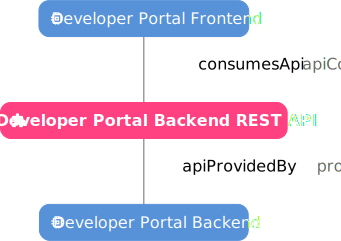

Registering a Web App¶
Preface¶
Example Developer Portal View

This tutorial will take you through registration of a basic web application, producing a result like the example on the right. This app will comprise of four entities:
- A Component for the Backend
- A Component for the Frontend
- An API produced by the Backend and consumed by the Frontend
- A System which encompasses the whole app
Create a Git Repository¶
To begin, we will create a new git repository. To do this we will:
- Create a new directory with
mkdir - Change into this new directory with
cd - Intialize git with
git init
Let's call our web app my-web-app, thus in a new bash terminal we will execute the following:
1 2 3 | |
Create a System¶
The first entity we will create is a System, this will encompass the whole app. We will define this at the root of our directory, to do so we will create a new yaml file named system-info.yaml which will contain the entity defintion. We can create this file from our bash terminal with:
1 | |
With our favourite text editor we will then open this file and begin filling it out. The nano editor is considered rather beginner friendly, thus we will choose to use it. You can open the file we just created by executing:
1 | |
System Entity Definition¶
Info
A full description of the top level structure of an entity definition can be found in the entity envelope reference.
Each entity definition must include an apiVersion and a kind. The apiVersion is used to track the version of the entity definition format that is being used, the current version is backstage.io/v1alpha1 thus we will use this. The kind is used to specify the type of entity we are defining, for a software system we use System. Thus we will begin the definition with the following:
1 2 | |
System Metadata¶
Info
A full list of entity metadata fields can be found in the entity metadata reference.
Each entity must be given some metadata, this is the same regardless of the entity kind, and will reside within the metadata object. Only a name is required, however we will choose to give the system a title and description as well. The name should be both human and machine readable, this it is required to be a globally unique string between 1 and 63 characters consisting of sequences of [a-z0-9A-Z] possibly separated by one of [-_.], we will choose to call our system my-web-app. The title field is less restrictive, it should simply be a short human readable string, we will title our System My Web App. The description is similar, but should be longer, we will use it to briefly describe what our system is. Thus we will add the following lines to the definition:
1 2 3 4 | |
System Spec¶
Info
A full list of system spec fields can be found in the system spec reference.
Each entity must be given a spec, this is unique to each entity kind, and will reside within the spec object. For a System, only an owner is required, in this tutorial I will reference myself, user:enu43627, whilst you should use your own FedID in place of mine (enu43627).
1 2 | |
Complete System Definition
1 2 3 4 5 6 7 8 | |
Once complete we can save and exit, to do so in nano press CTRL + X to exit, Y to save and Return to overwrite the opened file.
Create the Backend Component¶
We will now create a Component for the Backend. It is recommended that entity definitions reside with the code they represent, thus we will create a backend directory in which we would locate the code which runs our backend service, we will call it backend. We can create this directory from our bash terminal with:
1 | |
In this directory we will create a new yaml file named component-info.yaml which will contain the entity definition for our Backend Component. We can create this file from our bash terminal with:
1 | |
Like with system creation, we will open this file in our favoured text editor and add the definition.
Backend Component Entity Definition¶
For a Component we must define the entity kind to be component. Thus we will begin the definition with the following:
1 2 | |
Backend Component Metadata¶
We will name our backend component a my-web-app-backend, give it the title My Web App Backend and an description which will briefly describe what our component does. Thus we will add the following lines to the definition:
1 2 3 4 | |
Backend Component Spec¶
Info
A full list of component spec fields can be found in the component spec reference.
Each entity must be given a spec, this is unique to each entity kind, and will reside within the spec object. For a Component, a type, lifecycle, and owner are required, in addition to these we will define system and providesApis. Whilst type may be any string there are a small number of commonly used values which should be used, we will choose service to describe our Backend. The lifecycle may also be any string, but again there are a small number of commonly used values which should be used, we will choose experimental. Like with the system spec, I will reference myself, user:enu43627 as the user. The system field allows us to define the System this component belongs to, thus we will give it the same value as the metadata.name of our System. Similarly providesApis allows us to define a list of APIs which are exposed by our Backend Component, we will therefore make an entry with what will be the metadata.name of our API my-web-app-rest. Thus we will add the following lines to the definition:
1 2 3 4 5 6 7 | |
Complete Backend Component Definition
1 2 3 4 5 6 7 8 9 10 11 12 13 | |
Like with system creation we will now save and close this file.
Create the API¶
We will now create an API exposed by the Backend. It is recommended that entity definitions reside with the code they represent, thus we will use the previously created backend directory.
In this directory we will create a new yaml file named api-info.yaml which will contain the entity definition for our API definition. We can create this file from our bash terminal with:
1 | |
Like with system creation, we will open this file in our favoured text editor and add the definition.
API Entity Definition¶
For an API we must define the entity kind to be API. Thus we will begin the definition with the following:
1 2 | |
API Metadata¶
We will name our backend API my-web-app-rest, give it the title My Web App REST API and an description which will briefly describe what our API exposes. Thus we will add the following lines to the definition:
1 2 3 4 | |
API Spec¶
Info
A full list of API spec fields can be found in the API spec reference.
Each entity must be given a spec, this is unique to each entity kind, and will reside within the spec object. For an API, a type, lifecycle, owner and definition are required, in addition to these we will define a system. Whilst type may be any string there are a small number of commonly used values which should be used, we will choose openapi as this is most appropriate for representing REST APIs. Similarly to the backend component spec we will set the lifecycle to be experimental, the owner to be myself user:enu43627, and the system as the metadata.name of our System. The API definition should be a multi-line string in the format defined by the type, a minimal OpenAPI definition contains only a few fields and shall be used here, whilst a full definition should be used for real applications where available. Thus we will add the following lines to the definition:
1 2 3 4 5 6 7 8 9 10 | |
Complete API Definition
1 2 3 4 5 6 7 8 9 10 11 12 13 14 15 16 | |
Like with system creation we will now save and close this file.
Create the Frontend Component¶
We will now create a Component for the Frontend. It is recommended that entity definitions reside with the code they represent, thus we will create a frontend directory in which we would locate the code which runs our frontend website, we will call it frontend. We can create this directory from our bash terminal with:
1 | |
In this directory we will create a new yaml file named component-info.yaml which will contain the entity definition for our Frontend Component. We can create this file from our bash terminal with:
1 | |
Like with system creation, we will open this file in our favoured text editor and add the definition.
Frontend Component Entity Definition¶
For a Component we must define the entity kind to be component. Thus we will begin the definition with the following:
1 2 | |
Frontend Component Metadata¶
We will name our frontend component a my-web-app-frontend, give it the title My Web App Frontend and an description which will briefly describe what our component does. Thus we will add the following lines to the definition:
1 2 3 4 | |
Frontend Component Spec¶
Each entity must be given a spec, this is unique to each entity kind, and will reside within the spec object. For a Component, a type, lifecycle, and owner are required, in addition to these we will define system and consumesApis. Whilst type may be any string there are a small number of commonly used values which should be used, we will choose website to describe our Frontend. Similarly to the backend component spec we will set the lifecycle to be experimental, the owner to be myself user:enu43627, and the system as the metadata.name of our System. Akin to the defining the APIs provided by the backend, we will use consumesApis to define a list of APIs which are called on by our Frontend Component, we will therefore make an entry with what will be the metadata.name of our API my-web-app-rest. Thus we will add the following lines to the definition:
1 2 3 4 5 6 7 | |
Complete Frontend Component Definition
1 2 3 4 5 6 7 8 9 10 11 12 13 | |
Like with system creation we will now save and close this file.
Reference them with a Location¶
The final entity definiton we will create is a Location. This is what will be indexed by the developer portal entity ingress process, thus it must be in the exact location defined for the Git discovery locations.
Discovery Locations
github.com/DiamondLightSource- Entity descriptors at
/catalog-info.yaml
- Entity descriptors at
gitlab.diamond.ac.uk- Entity descriptors at
/catalog-info.yaml
- Entity descriptors at
Assuming we are using gitlab.diamond.ac.uk, we will create a file named catalog-info.yaml at the root of our directory. We can create this file from our bash terminal with:
1 | |
Like with system creation, we will open this file in our favoured text editor and add the definition.
Location Entity Definition¶
For a Component we must define the entity kind to be location. Thus we will begin the definition with the following:
1 2 | |
Location Metadata¶
We will name our location a my-web-app. Locations are generally considered internal machinery so we will forgo adding a title or description. Thus we will add the following lines to the definition:
1 2 | |
Location Spec¶
Each entity must be given a spec, this is unique to each entity kind, and will reside within the spec object. A Location has no required fields, but we will use targets to redirect the discovery process to the entities definitions we wish it to read, thus we will make an entry for each of the files we have created thus far. Thus we will add the following lines to the definition:
Important
The location type is intentionally left blank such that the discovery process is inherited from whichever discovery process indexed this location.
1 2 3 4 5 6 | |
Complete Location Definition
1 2 3 4 5 6 7 8 9 10 | |
Like with system creation we will now save and close this file.
Push to a Discovery Location¶
We can now push our repository to one of the discovery locations. Thus we will execute the following:
1 2 3 | |
You should now be see the componets you have registered on the developer portal - be aware that this may take a while depending on the schedule of the discovery provider.